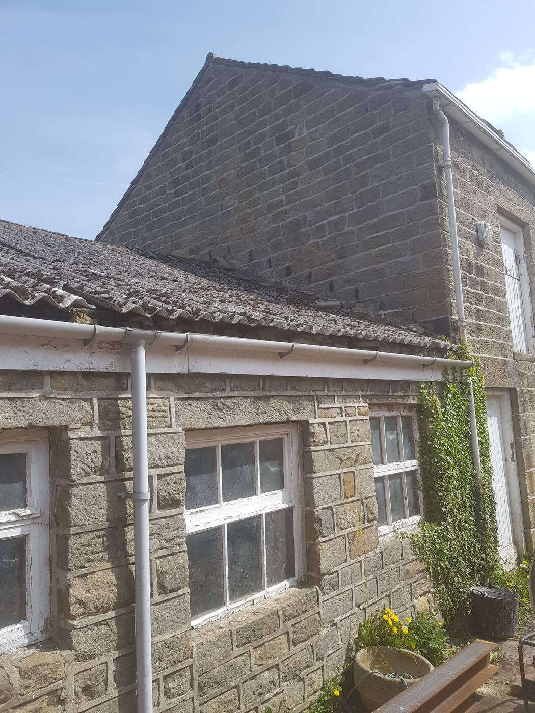

Sheffield Barn Remedial Work
TypeRenovation
Photos14
AreaBarnsley & South Yorkshire

About the project
Remedial work and corrections were made, supporting the structure of this stunning barn in the countryside, as well as maintaining the originality of this property.